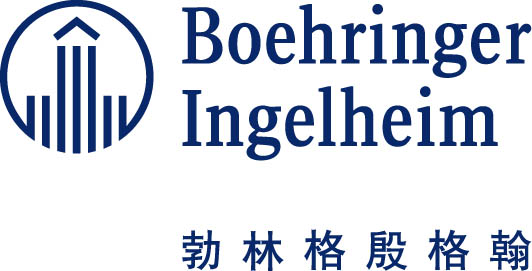

2017年2月27日，勃林格殷格翰公司今天宣布，不可逆靶向药物吉泰瑞®获批上市，这必将是非小细胞肺癌患者的福音。
为了减轻患者经济负担，让患者得到持续规范的治疗，延长患者生命，2017年5月，勃林格殷格翰与中国初级卫生保健基金会达成初步意向，计划将在全国范围内开展”生命转吉-肺癌患者援助项目“。
项目主要针对低保以及低收入患者展开，计划方案如下：
- • 低保患者
在本项目执行期内，获得县/区级民政部门认可满一年的城镇低保/农村特困非小细胞肺癌患者，经项目医院医生评估，适于接受吉泰瑞®治疗，可获得本项目全免援助，直至疾病进展。
- • 低收入患者
针对确诊为非小细胞肺癌,并已经使用满7个月吉泰瑞®治疗的患者，经项目医院医生评估，需使用吉泰瑞®进行进一步治疗，经项目办公室审核通过，为其免费援助后续治疗的所需药品，直至疾病进展。
医学条件：
经指定医疗机构评估确认为符合吉泰瑞®中国适应症，即：
- • 具有表皮生长因子受体（EGFR）基因敏感突变的局部晚期或转移性非小细胞肺癌（NSCLC）；
- • 既往未接受过表皮生长因子受体(EGFR)酪氨酸激酶抑制剂(TKI)治疗；
- • 含铂化疗期间或化疗后疾病进展的局部晚期或转移性鳞状组织学非小细胞肺癌(NSCLC)患者
- 患者必须是经病理学或细胞学证实的符合吉泰瑞®适应症的原发性IIIB或者IV期的非小细胞肺癌；（参照第八版TNM分期）
- • 患者在吉泰瑞®治疗之前必须经影像学检查，确认存在病灶；
- 患者的EGFR检测敏感突变阳性的(组织标本或血液标本检测均可接受）；如不能进行EGFR检测需提供项目医生提供情况说明表。
- • 患者必须没有其他与吉泰瑞®治疗相抵触的临床状况；
- • 患者体力状态KPS>60分；
- • 有足够的临床证据证实患者能够从吉泰瑞®治疗中获益且无严重不良反应（获益是指肿瘤病灶按照RECIST评价标准没有进展；无严重不良反应是指未发生因吉泰瑞®治疗引起的不可逆转或者不可耐受的伤害。
- • 既往连续接受的吉泰瑞®30mg或者40mg/片/天治疗，满7个月，并能按项目规定的时间进行医学检查者并符合项目入组标准，7个月的设定是基于如下医学原因
其它条件：
- 1.本项目援助对象为持有中华人民共和国居民身份证/军官证的大陆患者；
- 2.本项目援助对象必须为低保或低收入患者：
• 低保是指区/县级民政局认可并领取低保金满一年的城镇低保/农村特困患者
• 低收入指家庭低收入，项目办公室根据患者家庭的收入与支出、当地的消费水平进行综合性评估，包括因病致贫、因病返贫的家庭（家庭的医疗支出占家庭可支付能力的比重等于或超过40%）。
- 3.患者既往使用的吉泰瑞®必须是经国家药监局（CFDA）批准的药品，必须是中国大陆包装的发票为 2017年5月18日之后的。
- 4.患者根据医生处方自愿接受吉泰瑞®治疗，自愿申请并签署患者知情同意书，同时按照项目规定如实提交申请材料者。